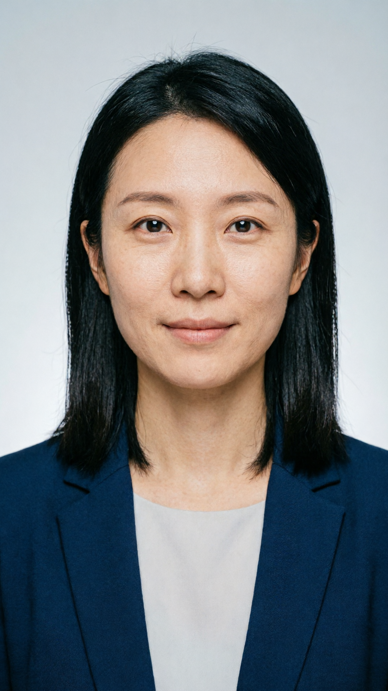
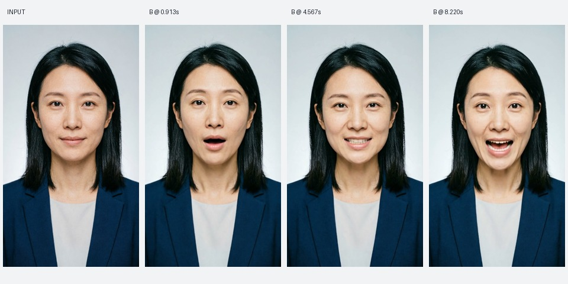
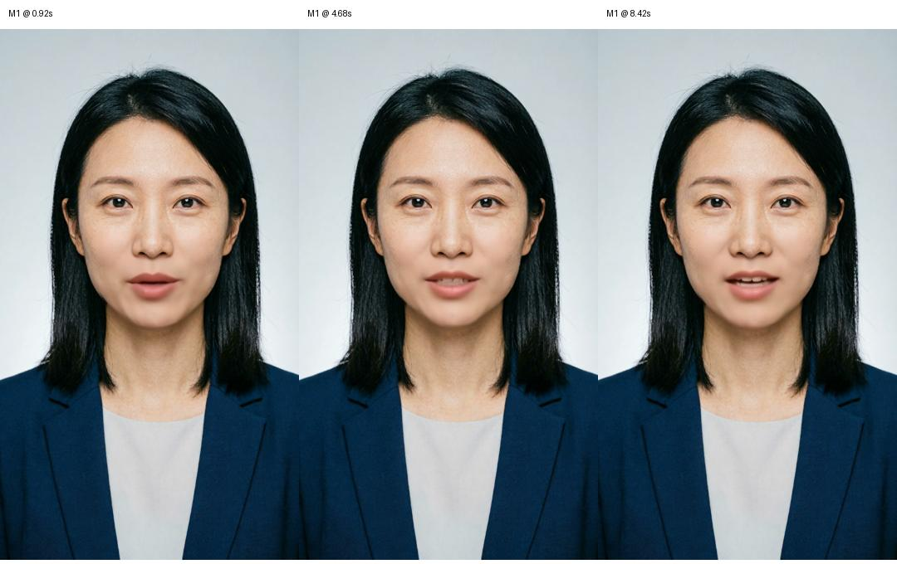

同一人物，三方案口播对比
固定同一张人物图、同一段 9.36 秒 TTS，比较阿里万相、MuseTalk 与火山 OmniHuman。这里比较的是图片＋音频驱动的口播能力，所有主表样片均未经过增强或字幕合成。
阿里万相
wan2.2-s2v · 720P · 复用首轮真实输出
可见头部、表情与嘴部变化。音轨波形提示开头约 187.5 ms 未覆盖，需重点听首字。打开原片
MuseTalk 自托管
MuseTalk 1.5 · 单图输入 · 复用 M1 原片
原音频长度保持，头部和眼睛基本静止。1080×1920 是画布，模型脸区按 256×256 处理。打开原片
火山 / 字节数字人
OmniHuman1.5 · 即梦 AI 智能视觉接口
HTTP 拒绝响应约 0.516 秒，不是生成速度。不根据这次鉴权失败给模型画质打分。
主要指标，一张表看清
相同输入用于控制人物和声音变量；输出分辨率、帧率及计时边界仍不同，不能直接把这些结果当统一性能排行榜。
| 指标 / 口径 | 阿里万相 | MuseTalk 单图 | 火山 OmniHuman1.5 |
|---|---|---|---|
| 实际模型 | wan2.2-s2v千问生成了共用图片与 TTS；口播模型是万相。 | MuseTalk 1.5固定代码与权重版本，fp16 / batch 4。 | jimeng_realman_avatar_picture_omni_v15720P / pe_fast_mode=true；请求已记录。 |
| 输入 | 同一 Qwen 人物 PNG 1080×1920 ＋ 同一 Cherry 音色 WAV 9.36 秒。此次未生图、未重新合成 TTS；远端素材重新下载核对摘要一致。 | ||
| 视频生成结果 | 原片已取得 / 可完整解码 | 原片已取得 / 可完整解码 | HTTP 401 / 50400，无任务 ID |
| 输出规格 | 720×1280 · 30 fps H.264 / AAC · 274 帧 | 1080×1920 · 25 fps H.264 / AAC · 234 帧 | 没有输出，无法测量 |
| 视频轨 / 音频轨时长 | 9.133333 s / 9.125011 s | 9.36 s / 9.36 s | 无法测量 |
| 生成耗时 | 163.39 s服务提交→完成，含排队 8.261 s；调度→完成 155.127 s。 | 99 s模型加载＋推理＋融合＋编码；不含安装和传输。 | 未知仅记录 HTTP 拒绝响应 0.516 s，不算生成。 |
| 视频阶段费用估算 | ¥8.217回执 9.13 s × 0.9 元/s。 | ¥0.0434599 s ÷ 3600 × 用户提供的 1.58 元/h。 | 实际费用未知若按 1 元/s 成功输出 9.36 s，名义估算 ¥9.36；本次没有成功输出，不据此记账。 |
| 本轮新增动作 | 复用原片，未重新调用 | 复用原片，未启动新 GPU 任务 | 一次生成提交，无自动重试独立预留 ¥20；预留不是扣费。 |
| 共享素材成本 | 原图约 ¥0.20 ＋ TTS 79 个计费字符 × 0.8 元/万字符 = ¥0.00632；共享素材合计约 ¥0.20632。本轮仅复用，未重新产生这笔生成用量。 | ||
| 部署 / 常驻成本 | 接口侧费用按用量核对，另计存储/流量等 | 曾观测部署区间约 1 小时，时间费约 ¥1.58。整天开机按 24×1.58=¥37.92 估算，与是否一直推理无关。 | 接口侧实际价格、额度与账单待核对 |
| 实际账单 | 尚未对账 | 尚未对账；活跃时间费不等于实例账单 | 尚未对账，不推定失败请求为 0 元 |
| 显存 / 人脸细节 | 云服务内部显存未知；关键帧脸部比输入更平滑 | 1 秒采样整卡峰值 7489 MiB；脸区模型 256×256，不能按画布称原生高清脸 | 无样片/无测量 |
| 人物身份观察 | 三个关键帧发型、服装、脸部外观与输入相近；全片未验收 | 三个关键帧整体外观相近；局部脸部平滑；全片未验收 | 未生成，不评价身份质量 |
| 动作自然度 | 关键帧可见头部姿态、表情变化；完整自然度待评 | 头部/眼睛基本静止，当前单图样片不满足完整自然主播目标 | 未知；不能把权限错误当质量差 |
| 音轨保持 | 全波形最佳偏移 −187.5 ms，相关约 0.985；提示首段截短，需听首字 | 全波形最佳偏移 0 ms，相关约 0.9995；容器与输入均 9.36 s | 无法测量 |
| 精确口型 / 牙齿伪影 | 完整逐音素视听未评 | 完整逐音素视听未评 | 无样片，未评 |
| 长期生产验收 | 未通过：缺长稿/多次/变体与完整视听 | 未通过：缺自然动作方案、长稿/变体与完整视听 | 未进入质量验收：先解决具体服务权限 |
波形偏移反映输入与输出音轨的关系，不是嘴型同步误差。质量项采用可追溯观察，不编造 0–100 分；完整人类视听评审人数当前为 0。单样本不计算成功率、P95 或稳定产能。
共用人物与原始旁白


妈妈买面包，爸爸泡白茶。检索增强生成，会先查资料，再生成回答。资料不对，答案也可能错。
Qwen-Image-2.0 生成人物；Qwen3-TTS-Flash / Cherry 合成声音。这是测试资产，尚未定为正式 Base Avatar / VoiceAsset。原 WAV 声明长度异常已留证，实际可解码 224640 个采样。
查看原图与音频摘要核验展开真实关键帧对照


这轮能得出的决定
自托管值得继续验证
MuseTalk 的活跃推理时间费用低，已经真实出片。但单图动作不足；要验证动作母版＋新音频的组合，且把母版、循环接缝与实例空闲费算进去。
查看动作母版与缓存样片（补充，不计入同图主表）暂不选最终生产模型
阿里需确认首字和完整画质，MuseTalk 需补自然动作与长片，火山需恢复 OmniHuman1.5 的具体权限。三个问题不能用一张总分榜掩盖。
火山本轮请求编号：20260921211031718C574B364CAFD35941。可据此定位账号、服务授权和 IAM 调用权限；错误本身未证明具体哪一项配置有误。